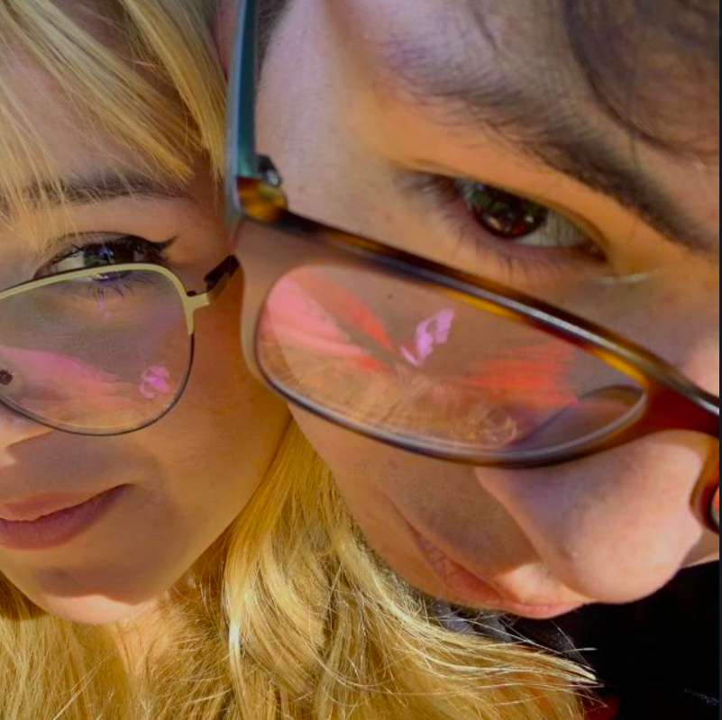

Bienvenido a nuestras recetas preparadas por nosotros.
Nos complace poder ofrecerles no solo recetas, sino también historias detrás de cada plato, recuerdos familiares y tradiciones que hemos ido guardando con cariño.
Información
¿Quienes somos?
Somos Salomé Castro y Renny Flores, estudiantes de cuarto semestre de la carrera de Pedagogía en Ciencias Experimentales con mención en Informática en la Universidad Central del Ecuador, en la Facultad de Filosofía, Letras y Ciencias de la Educación. Aunque nuestra formación académica se centra en la educación y la tecnología, compartimos una pasión que nos llevó a crear este sitio: el amor por la cocina. Para mí, Salomé, la cocina es un legado que heredé de mi padre, quien es chef, y quien me enseñó desde pequeña a disfrutar del arte culinario. A través de él, entendí que la cocina es una mezcla de creatividad, técnica y amor por los ingredientes. Por otro lado, mi compañero Renny descubrió su pasión por la cocina mientras trabajaba en una pastelería. Entre masas, glaseados y sabores dulces, nació su interés por explorar nuevas recetas y técnicas, y desde entonces no ha dejado de experimentar.
Vivimos en Quito, una ciudad llena de tradición gastronómica y sabores únicos que nos inspiran a crear recetas que combinan lo tradicional con lo moderno. Este sitio web no es solo un espacio de recetas, sino también una forma de compartir nuestras experiencias y aprendizajes culinarios con ustedes. Queremos que cada receta sea una oportunidad para que te diviertas en la cocina, para que te atrevas a experimentar y, sobre todo, para que disfrutes del proceso tanto como nosotros. Aquí encontrarás un enfoque joven, fresco y lleno de creatividad, pero siempre respetando la esencia de la cocina como un arte. Ya seas un principiante o un amante experimentado de la cocina, esperamos que cada uno de ustedes se sienta inspirado para probar algo nuevo. ¡Bienvenidos a nuestro mundo de sabores, creatividad y aprendizaje compartido!
Información de los Creadores:
Contactos/p>
Correo: Renny Flores_____: gabrielopez113@gmai.com
Numero de teléfono: 0969039818
Redes: Facebook: renny flores. Instagram: rennyflores_200
Correo: Salome Castro_____: marielasalomecastroparedes2004@gmai.com
Numero de teléfono: 0988602111
Instagram: rennyflores_200